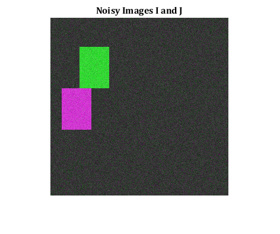
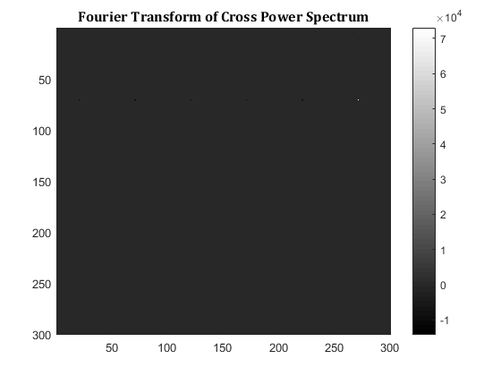

Contents
MyMainScript
close all clear all clc tic;
I = zeros(300,300); I(50:50+69, 50:50+49) = 255; % Image J is a shifted version of I. Shift = (x_o, y_o) J = zeros(300,300); J( 120:120+69, 20:20+49)=255; % Calculating the Fourier Transforms of the images O(NlogN) FT_I = fftshift(fft2(I)); FT_J = fftshift(fft2(J)); % Calculating the Cross Power Spectrum O(N^2) CP = (FT_I.*conj(FT_J))./(1e-5 + abs(FT_I).*abs(FT_J)); % Finding the FT of the Cross Power Spectrum O(NlogN) CP_FT = real(fft2(CP));
Repeat with Noise added to images
noisy_I = I + 20*randn(300); % Image J is a shifted version of I. Shift = (x_o, y_o) noisy_J = J + 20*randn(300); % Calculating the Fourier Transforms of the images O(NlogN) FT_I_noisy = fftshift(fft2(noisy_I)); FT_J_noisy = fftshift(fft2(noisy_J)); % Calculating the Cross Power Spectrum O(N) CP_noisy = (FT_I_noisy.*conj(FT_J_noisy))./(1e-5 + abs(FT_I_noisy).*abs(FT_J_noisy)); % Finding the FT of the Cross Power Spectrum O(NlogN) CP_noisy_FT = real(fft2(CP_noisy)); %Display results figure; imshowpair(I,J); title('Images I and J', 'Fontsize', 12, 'Fontname', 'Cambria'); figure; imshowpair(noisy_I,noisy_J); title('Noisy Images I and J', 'Fontsize', 12, 'Fontname', 'Cambria'); figure; imagesc(CP_FT, [min(min(CP_FT)), max(max(CP_FT))]); colormap(gray); colorbar; title('Fourier Transform of Cross Power Spectrum', 'Fontsize', 12, 'Fontname', 'Cambria'); figure; imagesc(CP_noisy_FT, [min(min(CP_noisy_FT)), max(max(CP_noisy_FT))]); colormap(gray); colorbar; title('Fourier Transform of Noisy Cross Power Spectrum', 'Fontsize', 12, 'Fontname', 'Cambria'); 
CP = exp{j2pi(ux_o + vy_o) and so the FT of CP would be a delta centred at (x_o, y_o)
When there is no noise added, the FT of CP is a black image with a solitary white point at [X Y] = [271 71]. This corresponds to a x_o = 270 and y_o = 70 (the difference of 1 arising due to MATLAB's indexing from 1) This corresponds to a shift of 270(or equivalenty -30, as image is considered to be periodic when Fourier transformation is applied) in the x direction and 70 in the y direction.
When there is noise, there is alot of noise in the Fourier transform of CP and so it is hard to identify the delta (ie a single pixel). The delta at [X Y] = [271 71] is faintly visible and is still the location ofmax value in the FT, but this is no longer true when noise levels are increased.
Time Complexity Analysis
N = number of pixels in image Time Complexity using FFT-based image registration: O(NlogN + N) = O(NlogN)
Time Complexity using pixel wise comparison for image registration: O(N^2) (because every pixel of the first image has to be compared to every pixel of the second image)
toc;
Elapsed time is 4.428535 seconds.